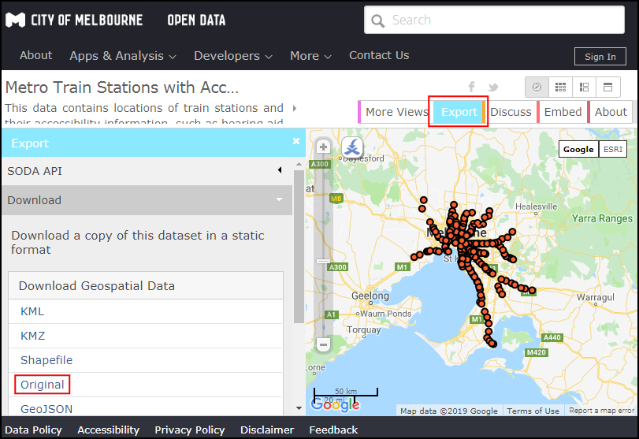
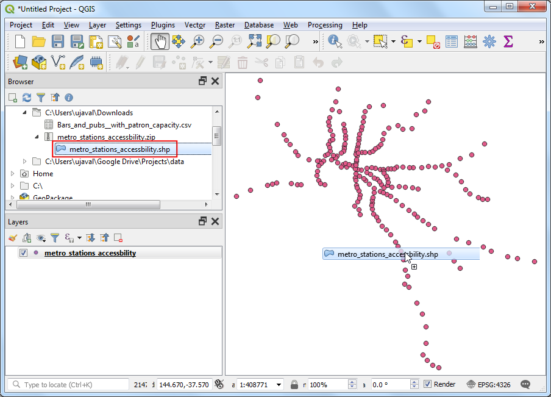
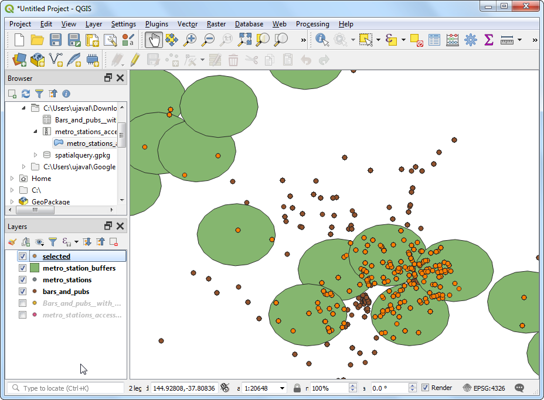

Ujaval Gandhi
Ujaval GandhiPerforming Spatial Queries (QGIS3)¶
Spatial queries are core to many types of GIS analysis. Spatial queries allows you to select features in a layer by their spatial relationships (intersect, contain, touch etc.) with features from another layer. In QGIS, this functionality is available via the Select by Location and Extract by Location Processing tools.
Overview of the task¶
We will be working with 2 data layers for the city of Melbourne, Australia. Given the data layers for the pubs and bars in the city and locations of all metro stations, we want to find out all bars and pubs within 500 meters of a metro station.
Other skills you will learn¶
Choosing an appropriate projection and re-projecting vector data.
Creating buffers.
Working with the geopackage (.gpkg) data format.
Get the data¶
City of Melbourne’s Open Data Platform provides many GIS-ready datasets for the city.
Download the Metro Train Stations with Accessibility Information dataset by Metro Trains Melbourne. Export the data in the Original format.
Download the Bars and pubs, with patron capacity dataset by City of Melbourne’s Census of Land Use and Employment (CLUE). Export the data as a CSV.

For convenience, you may directly download a copy of datasets from the link below:
metro_stations_accessbility.zip
Bars_and_pubs__with_patron_capacity
Data Source: [CITYOFMELBOURNE]
Procedure¶
Locate the
metro_stations_accessbility.zipfile in the QGIS Browser and expand it. Select themetro_stations_accessbility.shpfile and drag it to the canvas. A new layermetro_stations_accessbilitywill be loaded in the Layers panel.

The data layer for bars and pubs is in the CSV format. To load it in QGIS, go to . ( See Importing Spreadsheets or CSV files (QGIS3) for more details on importing CSV files)

In the Data Source Manager | Delimited Text dialog, browse and select the downloaded
Bars_and_pubs__with_patron_capacity.csvfile as File name. The X field and Y field columns should be auto selected tox coordinateandy coordinaterespectively. Click Add.

Note
QGIS saves the last-selected options for this dialog, so if you previously configured this dialog with other options, they may still be selected. Specifically, make sure the Record and Fields Options section has Number of header lines to discard option set to 0.
You will see a new
Bars_and_pubs__with_patron_capacitylayer added to the Layers panel. Both of the input layers are in the Geograhpic Coordinate Reference System (CRS)EPSG:4326 WGS84. For performing spatial analysis, it is recommended to use a Projected Coordinate Reference System (CRS). So we will now re-project both the layers to an appropriate regional CRS that minimizes distortions and allows us to work in units of distance such as meters instead of degrees. Go to .

Search and locate the tool. Double-click to launch it.

Select
Bars_and_pubs__with_patron_capacityas the Input layer. Click the Select CRS button next to Target CRS.

When selecting a projected coordinate system for your analysis, the first place to look is for a regional CRS for the area of interest. For Australia, the Map Grid of Australia (MGA) 2020 is a UTM-based grid system that is used for local and regional mapping. Melbourne falls in the UTM Zone 55, so we can select the GDA 2020 / MGA zone 55 EPSG:7855` CRS.

Note
If you are not sure of the a local CRS for the region that you are working in, selecting a CRS for the UTM zone based on the WGS84 datum is a safe choice. You can find out the UTM zone number of your region using UTM Grid Zones of the World.
Next, click the … button next to Reprojected and select
Save to GeoPackage. Geopackage is the recommended open data format spatial data and is the default data exchange format for QGIS3. A single GeoPackage.gpkgfile can contain multiple vector and raster layers.

Name the geopackage as
spatialqueryand click Save.

When prompted for a layer name, enter
bars_and_pubsand click OK. Click Run to reproject the layer.

The window will switch to the Log tab and you will see the algorithm run and create the new output layer
bars_and_pubs.

Now we will reproject the
metro_stations_accessbilitylayer. Switch back to the Paramters tab in the Reproject layer window. Selectmetro_stations_accessbilityas the Input layer. Keep the same Target CRS. Next, click the … button next to Reprojected and selectSave to GeoPackage. Select the same output filespatialquery(Remember that a single geopackage file can contain multiple layers, so we will save the new layer to the same geopackage file). Entermetro_stationsas the Layer name. Click Run.

Back in the main QGIS window, you will see 2 new layers loaded in the Layers panel:
bars_and_pubsandmetro_stations. You may turn off the visibility for original layers. Now, we are ready to do the spatial query. As we are interested in selecting bars and pubs within 500m of the metro stations, the first step is to create a buffer around the metro stations that represents our search area. Search and locate the tool in the Processing Toolbox and double-click to launch it.

In the Buffer dialog, select
metro_stationsas the Input layer. Set500meters as the Distance. Save the output to the samespatialquerygeopackage and entermetro_stations_buffersas the Layer name. Click Run.

You will see a new
metro_stations_bufferslayers loaded in the Layers panel. Now we can find out which points from thebars_and_pubslayer falls within the polygons from themetro_stations_bufferslayer. Locate the tool from the Processing Toolbox and double-click to launch it.

Note
Extract by location will create a new layer with the matching features from the spatial query. If you just want to select features, use the Select by location tool.
In the Extract by location dialog, select
bars_and_pubsas the Extract features from. CheckIntersectas the geometry predicate. Setmetro_stations_buffersas By comparing to the features from. Save the output to thespatialquerygeopackage as the layerselected. Click Run.

Once the processing finishes, you will see the
selectedlayers added to the Layers panel. Note that this layer only contains points from thebars_and_pubsthat fall within the buffer polygons.

Our analysis is complete. You may notice that the buffer polygons look oval-shaped. This is because our Project CRS is still set to EPSG:4326 WGS84. To better visualize the results, you can go to and select
GDA 2020 / MGA zone 55 EPSG:7855which we used for the analysis. Once set to this CRS, the buffer will appear in the correct shape.

If you want to give feedback or share your experience with this tutorial, please comment below. (requires GitHub account)